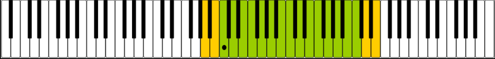

|
Співа́к, співа́чка або вокалі́ст, вокалі́стка — людина, що займається співом. Термін «вокаліст» частіше використовують щодо співаків, які пройшли спеціальну виконавську школу. Проте в багатьох випадках ці слова є синонімічними. Залежно від типу музики розрізняють академічних, народних і естрадних співаків.. Види співуАкадемічний спів В академічній музиці вокалістів розрізняють за різними параметрами вокального голосу. Залежно від тембру та діапазону голосу вокаліста розрізняють 5 основних видів голосу: співачка може бути сопрано або альт, а співак — тенор, баритон або бас. Залежно від голосових даних, передусім від сили й тембру голосу, вокаліст може виступати як оперний, камерний або хоровий співак. Існують різні напрямки вокалу, зокрема сольний і хоровий спів, які характеризуються різними виконавськими способами, тому вокалісти переважно спеціалізуються в тому чи іншому напрямку. Класифікація оперних співаків найрозгалуженіша: кожен із 5 основних видів голосу підрозділяється на окремі різновиди залежно від низки характерних особливостей. В Україні академічні співаки традиційно здобувають освіту в спеціалізованих закладах вищої освіти (наприклад, консерваторіях), де працюють вокальні факультети та оперні студії. Хоровий співак може мати як освіту вокаліста, так і освіту диригента-хоровика, а іноді й будь-яку іншу музичну освіту. Естрадний спів Естрадний спів відрізняється від академічного передусім манерою співу. Класифікація естрадних співаків за діапазоном голосу практично не застосовується, проте іноді їх класифікують за музичним напрямком виконання. Важливу роль для кар'єри естрадного співака мають також немузичні властивості, наприклад, зовнішність співака, акторські здібності. У розважальній музиці розрізняють вокаліста-соліста (англ. lead singer), що виконує основний голос, і бек-вокалістів (англ. backing singer, в США також backup singer, або background singer), що виконують гармонічні голоси разом із солістом або без нього. В Україні в деяких музичних училищах та інститутах культури є спеціалізовані факультети естрадного співу. Відомі випадки, коли естрадні співаки здобувають «зіркову» популярність ще в студентські роки, як курйозний випадок — звання заслуженої артистки. З кінця 1940-х років у деяких країнах відроджуються традиції шансоньє — співаків, які самі створюють мелодії, а найчастіше й слова своїх пісень (Жорж Брассанс, Шарль Азнавур у Франції, український шансоньє Ерко, Булат Окуджава, Володимир Висоцький, Олександр Галич в СРСР та інші). Класифікація співаківКласифікація співаків за звуковим діапазоном є найпоширенішою. Найпоширеніші категорії: В оперному співі додатково розрізняють такі голоси: бас-баритон та характерний (комічний) бас, ліричний і драматичний тенори, драматичне та колоратурне сопрано та інші. Є також рідкісні голоси чоловіків, які співають у властиво жіночому діапазоні — контратенор і альтіно. |
Основні вокальні діапазони Жіночі Сопрано Мецо-сопрано Контральто Чоловічі Контратенор Тенор Баритон Бас |